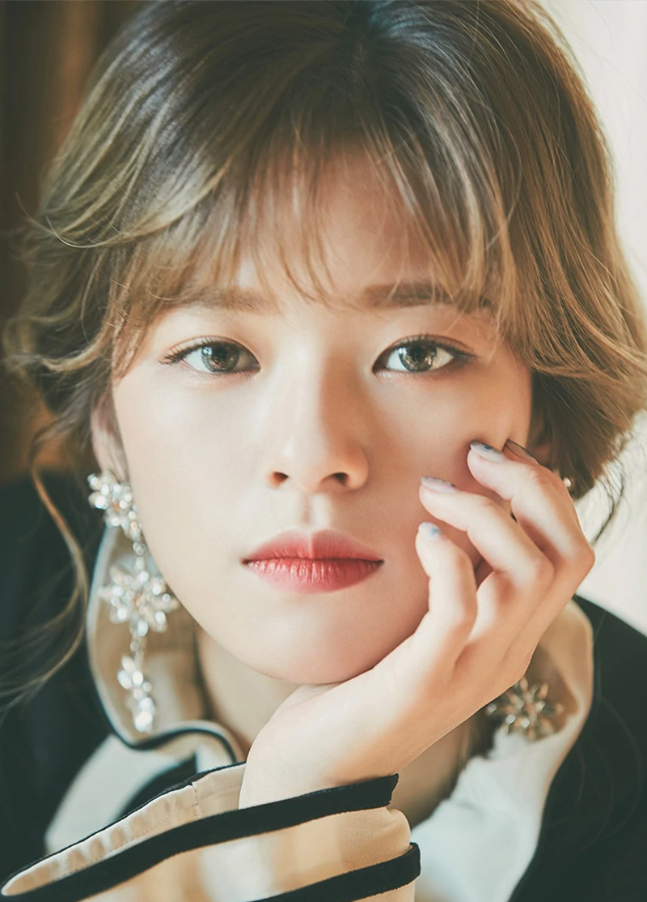

|  |
Yoo Jeong-yeon (Hangul: 유정연, originally named Yoo Kyung-wan), better known by her first name Jeongyeon (Hangul: 정연), is a South Korean singer. She is a member of the girl group, Twice, as a lead vocalist of the group. Jeongyeon trained for five years before launching her idol career as a vocalist in Twice. She is referred to as the group’s embodiment of the “girl crush". Source: Twice Wiki
|
| Birth Date: | November 1, 1996 |
| MBTI : | ISFJ-T |
| Instagram : | jy_piece |
| Individual Color: | Yellow-Green |
| Position: | Lead Vocalist |